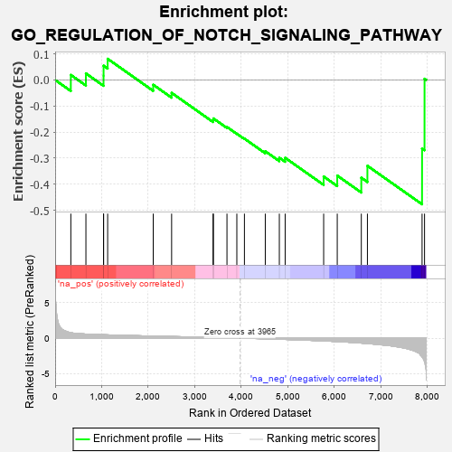
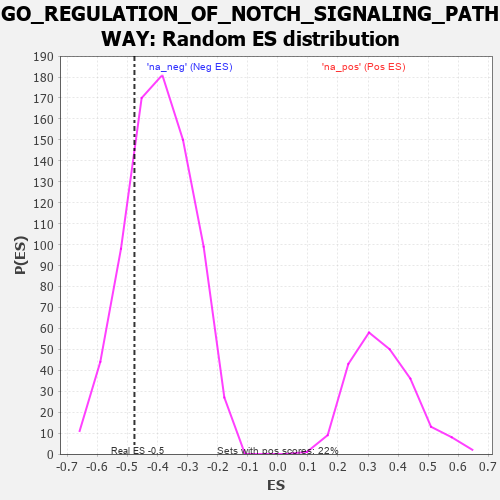

| | | Dataset | 7d |
| Phenotype | NoPhenotypeAvailable |
| Upregulated in class | na_neg |
| GeneSet | GO_REGULATION_OF_NOTCH_SIGNALING_PATHWAY |
| Enrichment Score (ES) | -0.4769157 |
| Normalized Enrichment Score (NES) | -1.208561 |
| Nominal p-value | 0.22307692 |
| FDR q-value | 0.6152344 |
| FWER p-Value | 1.0 |
Table: GSEA Results Summary

Fig 1: Enrichment plot: GO_REGULATION_OF_NOTCH_SIGNALING_PATHWAY
Profile of the Running ES Score & Positions of GeneSet Members on the Rank Ordered List
| PROBE | GENE SYMBOL | GENE_TITLE | RANK IN GENE LIST | RANK METRIC SCORE | RUNNING ES | CORE ENRICHMENT | | 1 | DLL1 | | | 337 | 0.760 | 0.0193 | No |
| 2 | HES5 | | | 661 | 0.571 | 0.0251 | No |
| 3 | AKT1 | | | 1040 | 0.476 | 0.0161 | No |
| 4 | YAP1 | | | 1041 | 0.475 | 0.0547 | No |
| 5 | SRC | | | 1128 | 0.459 | 0.0812 | No |
| 6 | BMP7 | | | 2107 | 0.290 | -0.0183 | No |
| 7 | KAT2B | | | 2502 | 0.226 | -0.0495 | No |
| 8 | GAS2 | | | 3392 | 0.090 | -0.1540 | No |
| 9 | AAK1 | | | 3400 | 0.089 | -0.1477 | No |
| 10 | EPN2 | | | 3691 | 0.045 | -0.1805 | No |
| 11 | JAG2 | | | 3903 | 0.010 | -0.2062 | No |
| 12 | ROBO2 | | | 4066 | -0.018 | -0.2251 | No |
| 13 | SNW1 | | | 4514 | -0.096 | -0.2735 | No |
| 14 | FBXW7 | | | 4816 | -0.161 | -0.2983 | No |
| 15 | EP300 | | | 4941 | -0.186 | -0.2988 | No |
| 16 | ELF3 | | | 5768 | -0.396 | -0.3704 | No |
| 17 | JAG1 | | | 6060 | -0.494 | -0.3670 | No |
| 18 | ROBO1 | | | 6577 | -0.699 | -0.3751 | Yes |
| 19 | EGFR | | | 6708 | -0.765 | -0.3294 | Yes |
| 20 | CHAC1 | | | 7882 | -2.633 | -0.2631 | Yes |
| 21 | ARRB1 | | | 7935 | -3.377 | 0.0045 | Yes |
Table: GSEA details [plain text format]

Fig 2: GO_REGULATION_OF_NOTCH_SIGNALING_PATHWAY: Random ES distribution
Gene set null distribution of ES for GO_REGULATION_OF_NOTCH_SIGNALING_PATHWAY